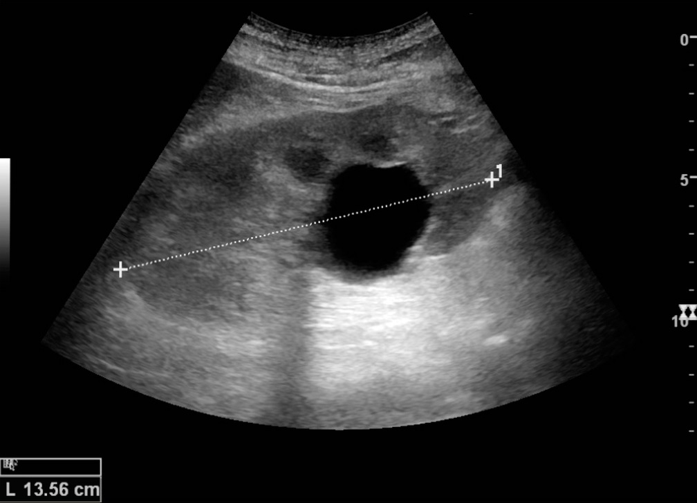
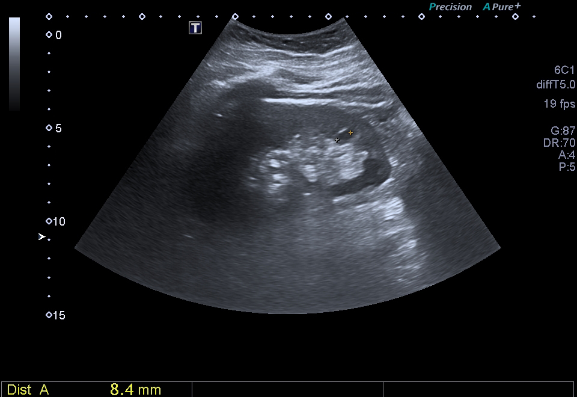

If you look at an ultrasound image of a urinary bladder, a simple cyst, or another fluid-filled structure, you may notice something interesting:
the fluid often looks completely black.
At first, this can seem strange.
The ultrasound machine is sending sound waves into the body, so why does a fluid-filled area appear as if there is nothing there?
The answer becomes much easier once we understand what the ultrasound machine is actually displaying.

A simple renal cyst appears anechoic with posterior acoustic enhancement.
Image: Kristoffer Lindskov Hansen, Michael Bachmann Nielsen and Caroline Ewertsen, CC BY 4.0, via Wikimedia Commons .
Ultrasound Images Are Made From Echoes
An ultrasound transducer sends sound waves into the body.
As the waves travel through different tissues, some of the sound is reflected or scattered back toward the transducer.
These returning signals are called echoes.
The ultrasound machine uses these echoes to build the image.
More returning echoes → brighter image
Fewer returning echoes → darker image
So when an area appears black, the important question is not:
“Is there nothing there?”
Instead, ask:
“How many echoes are coming back from this area?”
When there are essentially no internal echoes, the area is described as anechoic.
And on a typical grayscale ultrasound image, anechoic areas appear black.
So, What Is Different About Simple Fluid?
Now imagine the ultrasound beam entering a simple fluid-filled structure.
Inside many solid tissues, there are numerous small structures and interfaces that can scatter or reflect some of the ultrasound energy back toward the transducer.
That produces the different shades of gray and the familiar speckled appearance seen in many tissues.
Simple fluid is different.
It is relatively uniform and contains very few internal structures that produce significant echoes.
So as the ultrasound travels through the fluid, very little of it is scattered back toward the transducer from inside the fluid.
The machine therefore receives very little signal from that region.
And the result is:
very few echoes → very dark appearance
That is why simple fluid is often called anechoic.
But Is the Ultrasound Sound Actually Stopping There?
No.
This is probably the most important part to understand.
The fluid looks black, but that does not mean the ultrasound beam cannot pass through it.
In fact, ultrasound can travel through simple fluid quite well.
The reason the fluid looks black is mainly that very little sound is returning from inside the fluid as an echo.
So there are actually two different things happening:
Sound going through the fluid
and
sound returning from the fluid
The first can happen quite effectively.
The second is what is relatively limited.
That distinction explains why a fluid-filled structure can look black while still allowing the ultrasound beam to continue deeper into the body.
What Happens When the Sound Reaches the Other Side?
This is where the story gets even more interesting.
Suppose the ultrasound beam enters a simple cyst.
Inside the cyst, there are very few internal echoes, so the cyst appears black.
But the ultrasound beam continues travelling through it.
When the beam reaches the tissue behind the cyst, it encounters structures that can produce echoes.
Because the sound has travelled through the fluid with relatively little attenuation, more of its energy can reach those deeper tissues.
The returning echoes from those tissues can therefore be stronger than the echoes from nearby tissue that the beam travelled through directly.
The area behind the fluid-filled structure can appear brighter.
This is called:
Posterior Acoustic Enhancement
It is a very useful ultrasound finding associated with fluid-filled structures.
So you can think of a simple fluid-filled structure as having two visual clues:
Inside the fluid → black
Behind the fluid → may look brighter
Why Does Fluid Allow More Sound Through?
This is related to attenuation.
As ultrasound travels through the body, its energy decreases.
Different tissues attenuate ultrasound by different amounts.
Simple fluid generally causes less attenuation than many surrounding soft tissues.
So when the beam passes through a fluid-filled structure, it loses relatively little energy compared with travelling through an equivalent thickness of more attenuating tissue.
More of the beam can therefore reach structures deeper to the fluid.
This is why posterior acoustic enhancement can occur.
More sound reaches deeper tissue → stronger returning echoes → brighter appearance behind the fluid
A Simple Cyst Is a Good Example
A simple cyst is one of the easiest examples for understanding this concept.
On ultrasound, a typical simple cyst has:
- a well-defined margin
- an anechoic interior
- no internal echoes
- and often posterior acoustic enhancement
So instead of seeing a gray, speckled structure inside the cyst, you see a dark area.
Then, immediately deeper to it, the tissues may appear brighter.
These features are part of the characteristic ultrasound appearance of a simple cyst.

A small simple renal cyst seen on abdominal ultrasound.
Image: Ptrump16, CC BY-SA 4.0, via Wikimedia Commons .
What About the Urinary Bladder?
The urinary bladder provides another familiar example.
When the bladder is filled with urine, the urine can appear anechoic, producing a dark appearance on ultrasound.
The tissues behind the bladder may appear brighter because the ultrasound beam has travelled through the relatively low-attenuation fluid before reaching them.
This is a classic example of posterior acoustic enhancement.
So when you see a black bladder on ultrasound, you are not looking at an area where ultrasound has disappeared.
You are seeing an area from which very few internal echoes are returning.
Does All Fluid Look Completely Black?
No.
This is an important point.
When we say that fluid looks black, we are mainly talking about simple fluid.
Real fluid collections can contain other material.
For example, a fluid collection may contain:
- blood
- protein
- pus
- cells
- debris
These materials can create internal echoes.
As a result, the fluid may no longer look completely black.
It may appear gray, contain internal echoes, or have a more complex appearance instead.
Simple fluid → often anechoic
Fluid containing internal material → may become echogenic or complex
This is why simply seeing something that is “dark” is not enough to describe every fluid-containing structure.
Black Does Not Always Mean Fluid
There is another useful lesson here.
A black area on ultrasound does not automatically mean:
“This must be fluid.”
Different ultrasound phenomena can produce dark appearances.
For example, acoustic shadowing can create a dark area behind a strong attenuator or reflector such as a stone.
But that darkness has a completely different cause.
With simple fluid, the important idea is:
very few internal echoes + relatively low attenuation
With acoustic shadowing, the problem is that little useful sound reaches the structures beyond the strong attenuating or reflecting object.
So when interpreting an ultrasound image, it is better to ask:
“Why is this area dark?”
rather than automatically assuming:
“Black means fluid.”
Anechoic vs Hypoechoic
These two terms are worth separating.
Anechoic means essentially no internal echoes, so the structure appears black.
Hypoechoic means the structure produces fewer echoes than the surrounding tissue, so it appears darker — but it may still contain visible gray echoes.
Anechoic → black
Hypoechoic → darker than surrounding tissue
This distinction becomes very useful when describing ultrasound images accurately.
The Interesting Part: Black Inside, Bright Behind
At this point, the whole idea can be put together.
Imagine the ultrasound beam travelling through a simple cyst:
This combination is one of the reasons fluid-filled structures can be recognized on ultrasound.
The Whole Idea in One Simple Example
Think about a simple cyst.
The cyst itself is black because there are very few internal echoes.
But the tissue behind it can become brighter because the ultrasound beam has travelled through the low-attenuation fluid before reaching that tissue.
So the image is not simply telling you:
“There is nothing here.”
It is giving you information about how ultrasound is travelling through the structure.
That is what makes the black appearance useful.
Quick Recap
- Ultrasound images are created from returning echoes.
- Simple fluid produces very few internal echoes.
- Very few returning echoes make the fluid appear black.
- This black appearance is called anechoic.
- Ultrasound can still travel through the fluid; the beam is not simply stopping there.
- Simple fluid generally causes relatively little attenuation.
- More ultrasound can therefore reach tissues behind the fluid.
- Those deeper tissues may produce stronger echoes and appear brighter.
- This is called posterior acoustic enhancement.
- Not every fluid collection is completely black because blood, cells, protein, pus, or debris can produce internal echoes.
- A black area on ultrasound does not automatically mean fluid; the reason for the darkness must be considered.
The Key Idea
Simple fluid looks black on ultrasound because it produces very few internal returning echoes.
The ultrasound beam is still travelling through the fluid. Because simple fluid also causes relatively little attenuation, more sound can reach the tissues behind it, which can make that deeper region appear brighter.
So the pattern to remember is:
Simple fluid → few echoes → black appearance
Low attenuation → more sound reaches deeper tissue → posterior acoustic enhancement
Once you understand this, the black appearance of a simple cyst or fluid-filled structure stops being just something to memorize — it becomes a direct result of how ultrasound waves interact with the body.
Sources
-
Clinical Ultrasound Physics —
overview of ultrasound echoes, fluid appearance,
attenuation, and posterior enhancement.
PubMed Central (PMC) -
Ultrasound Physics and Instrumentation —
StatPearls, NCBI Bookshelf —
ultrasound echogenicity, anechoic structures,
attenuation, and posterior acoustic enhancement.
NCBI Bookshelf -
Society of Radiologists in Ultrasound Consensus —
sonographic features of simple cysts, including
anechoic appearance and posterior acoustic enhancement.
PubMed Central (PMC)